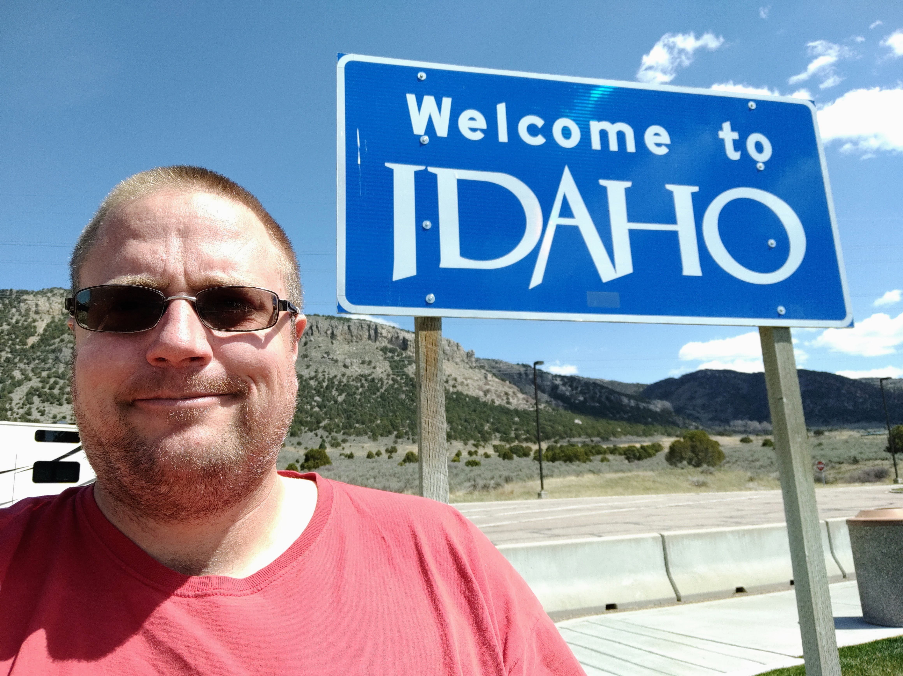

Hi, I'm Big Mike.
The top background image is from one of my favorite rest areas, near Farmer City, Illinois.
The middle background image is Willow Creek Pass. I go up and over that quite often.
The bottom background image is from Mackay, Idaho. I drive through there a lot.
About me
I work as a long haul truck driver. I like to drive truck in Texas, Iowa, Nebraska, Missouri and Tennessee.
Hobbies
- I like to read James Patterson novels.
- I like to watch the Discovery Channel.
- I like to dabble in a little code as a hobby.